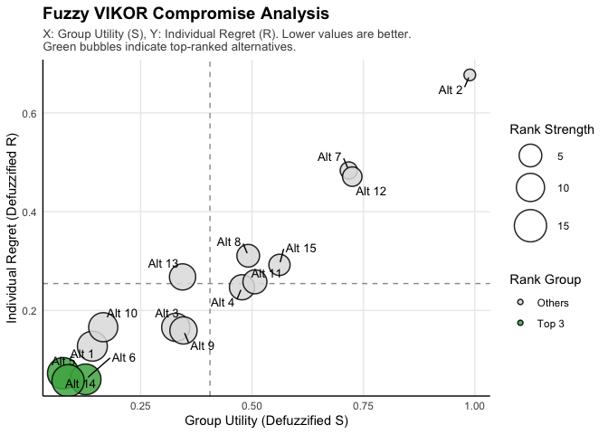

CityOptimaR to kompleksowe narzędzie do Wielokryterialnej Analizy Decyzyjnej (MCDA) w środowisku rozmytym. Umożliwia pełną ścieżkę analityczną: od surowych danych, przez wyznaczanie wag metodą BWM (Best-Worst Method), aż po rankingi metodami TOPSIS, VIKOR i WASPAS.
Możesz zainstalować wersję deweloperską z GitHub:
# install.packages("devtools")
devtools::install_github("OlaStepak/CityOptimaR")Oto podstawowy przykład użycia pakietu z wbudowanymi danymi o miastach europejskich.
library(CityOptimaR)
# 1. Wczytaj dane
data("city_data")
head(city_data, 3)
#> City Country Cost_Living Job_Market Safety Healthcare Housing_Price
#> 1 Vienna Austria 16.8 135.1 71.8 81.8 12.2
#> 2 Copenhagen Denmark 4.8 136.3 74.2 78.0 9.0
#> 3 Amsterdam Netherlands 7.1 130.8 74.3 81.5 9.2
#> Transport Air_Quality Green_Space
#> 1 21.4 84.4 50
#> 2 27.5 77.5 46
#> 3 22.2 77.3 34
# 2. Przygotuj macierz rozmytą
skladnia <- "Cost =~ Cost_Living + Housing_Price;
Quality =~ Job_Market + Safety + Healthcare;
Environment =~ Air_Quality + Green_Space + Transport"
macierz <- prepare_mcda_data(
city_data,
skladnia,
alternative_column = "City"
)
# 3. Oblicz ranking metodą Fuzzy VIKOR z wagami BWM
wynik <- fuzzy_vikor(
macierz,
criteria_types = c("min", "max", "max"),
bwm_criteria = c("Cost", "Quality", "Environment"),
bwm_best = c(8, 1, 3), # Quality najważniejsze
bwm_worst = c(1, 8, 4) # Cost najmniej ważne
)
#> Weights not provided. Calculating using BWM...
# 4. Wyświetl wynik
print(wynik$results[1:5, ])
#> Alternative Def_S Def_R Q Ranking
#> Amsterdam 1 0.1417235 0.12762775 0.074599552 4
#> Athens 2 0.9888625 0.67692308 0.996312920 15
#> Berlin 3 0.3288860 0.16587864 0.209502676 6
#> Brussels 4 0.4775557 0.24695771 0.358589090 9
#> Copenhagen 5 0.0763270 0.07270401 -0.006908566 2Pakiet oferuje profesjonalne mapy decyzyjne:
# Mapa strategiczna VIKOR
plot(wynik)
Agreguj wyniki z wielu metod, aby uzyskać robust ranking konsensusu:
meta <- rozmyty_meta_ranking(
macierz,
typy_kryteriow = c("min", "max", "max"),
bwm_najlepsze = c(8, 1, 3),
bwm_najgorsze = c(1, 8, 4)
)
#> Weights not provided. Calculating objective weights using Shannon entropy...
#> Weights not provided. Calculating objective weights using Shannon entropy...
#> Weights not provided. Calculating objective weights using Shannon entropy...
# Pokaż Top 5 miast
head(meta$porownanie[order(meta$porownanie$Meta_Agregacja), ], 5)
#> Alternatywa R_VIKOR R_TOPSIS R_WASPAS Meta_Suma Meta_Dominacja
#> 10 10 1 1 1 1 1
#> 5 5 2 2 2 2 2
#> 6 6 3 3 5 3 3
#> 14 14 4 4 4 4 4
#> 1 1 6 5 3 5 5
#> Meta_Agregacja
#> 10 1
#> 5 2
#> 6 3
#> 14 4
#> 1 5Więcej informacji i szczegółowych przykładów znajdziesz w:
vignette("poradnik_mcda", package = "CityOptimaR")
?fuzzy_vikor, ?fuzzy_topsis, ?rozmyty_meta_ranking